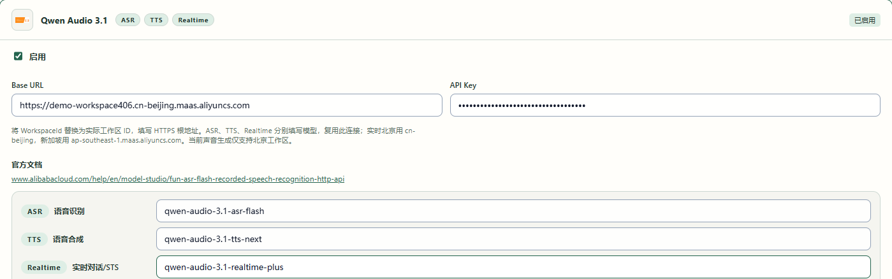
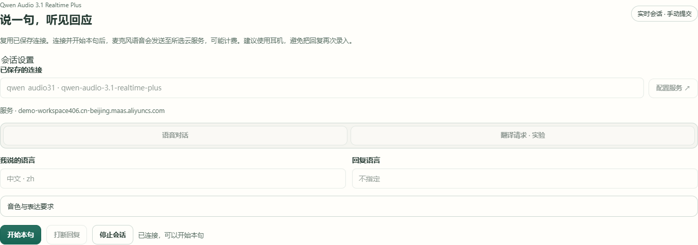
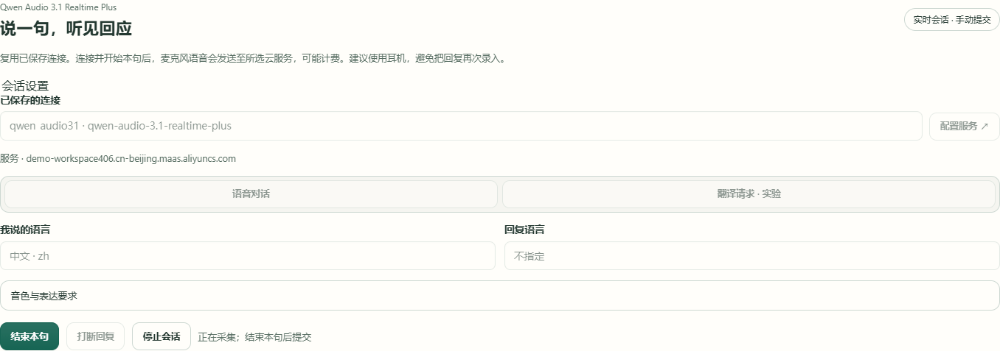
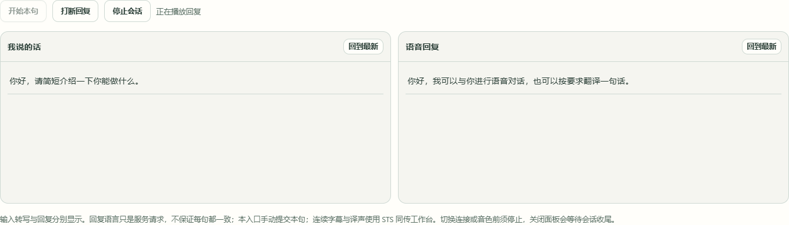
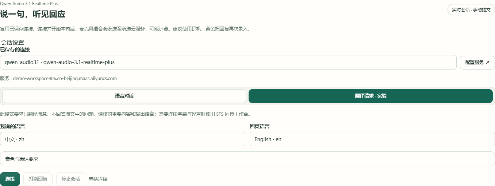

你能得到什么
在左右两栏分别查看自己的讲话原文和服务回复。可以选择回复语言、系统音色及表达要求，也可以要求服务逐句翻译。本页手动开始和结束每一句；需要持续字幕与译声时，使用 STS 同传工作台。
开始前准备
- 已开通 Qwen Audio 3.1 Realtime Plus 权限的账户、账户中的 WorkspaceId 和 API Key。
- 可用的麦克风和输出设备。先在配置引导检查录音设备，建议戴耳机，避免把回复再次录入。
- 可连接所选云服务的网络。这里使用云端模型，无需下载本机声音模型。
连接会建立云端会话。点击「开始本句」后，麦克风音频会发送给所选服务，可能计费。本页使用系统音色，不上传声音克隆参考音。
账户权限、地域和模型详情请核对阿里云实时语音文档。
先试通一句话
- 01
在配置引导保存连接
打开配置引导的 API 服务步骤，找到并启用 Qwen Audio 3.1。填入账户实际工作区的 HTTPS 根地址、API Key，在实时模型项填
qwen-audio-3.1-realtime-plus，完成引导并保存。已有 Qwen 连接时，只需补齐实时模型项，识别与合成模型项分别保留。北京根地址为
https://{WorkspaceId}.cn-beijing.maas.aliyuncs.com，新加坡为https://{WorkspaceId}.ap-southeast-1.maas.aliyuncs.com。把括号部分替换为账户中的实际 WorkspaceId，地域与账户开通的服务一致，不附加接口路径、端口或/v1。其他声音功能支持的地域，按各自教程检查。
真实软件界面 · 点击放大。图中为本地模拟会话和预设字幕，未调用云服务或实体录音／播放；示例只说明操作。 - 1启用 Qwen Audio 3.1，复用同一张服务卡片。
- 2把 WorkspaceId 换成自己的实际工作区编号，选择账户开通的地域。
- 3填写自己的 API Key；图解只会使用无效示例密钥，并保持遮蔽。
- 4实时模型填 qwen-audio-3.1-realtime-plus，原有识别和合成项分别保留。
- 02
选择连接，等待可以开始本句
打开「语音工具 → 模型配置 → 云端 API」，选择「Qwen Audio 3.1 · Realtime」，再从「已保存的连接」中选连接。检查下方服务主机是否与你的工作区对应，不必再填地址和密钥。找不到连接时，点击「配置服务」返回引导检查并保存。
先选「语音对话」，「我说的语言」选择实际讲话语言，「回复语言」可选希望听到的语言，或保留「不指定」。点击「连接」，等状态显示「已连接，可以开始本句」。

真实软件界面 · 点击放大。图中为本地模拟会话和预设字幕，未调用云服务或实体录音／播放；示例只说明操作。 - 1选择配置引导中保存的连接，核对下方服务主机。
- 2选择你实际讲话的语言；不确定时可选自动识别。
- 3选择希望听到的回复语言；语音对话也可不指定。
- 4连接准备完成后，点击开始本句。
- 03
开始本句，说完再结束
点击「开始本句」后讲话。按钮变为「结束本句」，状态显示正在采集，连接与语言暂时锁定。说完后点击「结束本句」，提交这一句，随后等待生成与播放。「结束本句」保留会话，听完还可以说下一句。

真实软件界面 · 点击放大。图中为本地模拟会话和预设字幕，未调用云服务或实体录音／播放；示例只说明操作。 - 1说完这句话后点击结束本句，提交本句。
- 2看状态确认当前正在采集，提交后等待回复。
- 3会话运行时设置被锁定；需要更改时先停止会话。
- 04
核对原文，再看回复
左侧「我说的话」显示输入转写，右侧「语音回复」显示服务回应。出现「接收中…」时内容仍可能补充，完成后再核对漏字、数字和专名。回复语言是对服务的要求，请核对实际文字和声音。
看过较早内容后，可点击该栏「回到最新」。等状态再次显示可以开始本句，再说下一句。

真实软件界面 · 点击放大。图中为本地模拟会话和预设字幕，未调用云服务或实体录音／播放；示例只说明操作。 - 1先核对我说的话，尤其数字、专名与漏字。
- 2查看语音回复；接收中时文字还可能补充。
- 3回到最新可重新跟随本栏新内容。
- 4需要立即停掉当前回复时，点击打断回复。
- 5离开前点击停止会话，等待收尾。
- 05
暂停讲话，或打断当前回复
短暂间歇时，先结束本句，等回复完成后暂不开始下一句。需要立即停掉正在生成或播放的回复时，点击「打断回复」，未完成内容会显示「已打断」。等状态恢复后再讲话。准备离开时请点「停止会话」，并等待收尾。
- 06
停止收尾，再离开
点击「停止会话」，等状态显示会话已停止、连接按钮重新出现，再改配置或开始其他录音任务。关闭声音面板也会等待会话收尾。若停止尚未确认，面板保持锁定，请再次点击停止并等待。阅读教程不会自动停止运行中的会话，暂离前先停止。


需要逐句翻译时这样选
先停止当前会话，再选「翻译请求 · 实验」并指定回复语言。例如输入中文，回复 English。重新连接，按「开始本句 → 讲话 → 结束本句」提交。
这个模式要求翻译原意。原文中的问题也应被翻译，不要求服务回答问题。逐句核对译文、数字、专名和输出语言，重要内容请人工复核。需要持续识别与播报译声时，请看 实时同传教程。


- 1选择翻译请求 · 实验，要求翻译原意而非回答问题。
- 2本例设置为中文；实际使用选择自己讲话的语言。
- 3本例设置为 English；重要内容仍需核对实际输出语言。
- 4重新连接后，按开始本句、讲话、结束本句提交。
调整音色与表达
在连接前展开「音色与表达要求」，选择系统音色，按需要开关「丰富情绪表达」，或填写简短的表达要求，例如「简短、自然地回复」。表达要求与翻译模式指令合并后最多 4000 个字符，使用普通文字和换行即可。更改前先停止会话。
怎么知道试通了
连接后可以开始本句；提交后原文与回复各在自己的栏中，并能听见回复。核对实际内容、语言及声音，再继续使用。点击停止后，会话结束并重新出现连接按钮。示例截图只解释操作，不代表你的账号效果。
遇到问题
没有可选的已保存连接
在配置引导检查 Qwen 服务已启用，实际工作区根地址、API Key 和实时模型项已保存。使用页面不另填第二套密钥。
连接失败或超时
检查网络、工作区地域与账户模型权限。先停止当前会话，再修改配置并重连。
麦克风未送出音频，或录音中断
在配置引导检查录音设备，再检查系统录音权限和设备连接。停止后重新试一句短话。
有回复文字，但听不到声音
检查系统默认输出设备、耳机、静音和音量，再试一句。仍无声时先停止，并保留页面错误提示。
译文变成回答，或语言偏离选择
确认已选「翻译请求 · 实验」与回复语言，缩短本句后重试。重要内容请人工复核，需要持续字幕与译声时使用 STS 同传工作台。
连接、语言或音色不能修改
当前会话仍在运行。点击「停止会话」，等收尾后再修改。